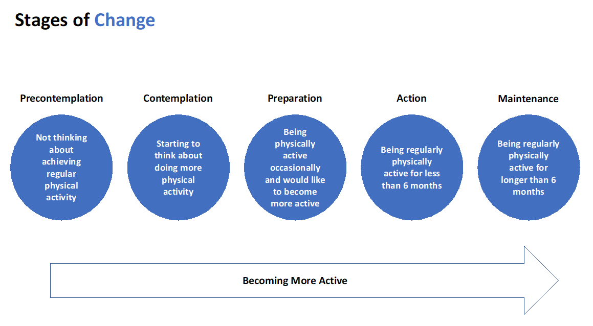

The app is grounded in psychology techniques including the "Trans Theoretical" Model.
This model recognises that people are at different stages in their readiness to be physically active. The trans theoretical model comprises of five stages of change which are illustrated below. At any point in time you as a carer will fall into one of these stages in relation to your present physical activity. The aim of this app is to help you identify ways to become more active, move through the stages of change and prevent relapse by taking it one day at a time.
The format of this educational section is to take you through a logical step by step process and allows you to focus on your personal needs and physical activity plans. It complements the activities we have developed both in text and video.
Where are you on your physical activity journey? Hint- this app is designed for carers either in the contemplation stage or preparation stages!
